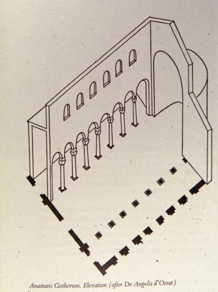
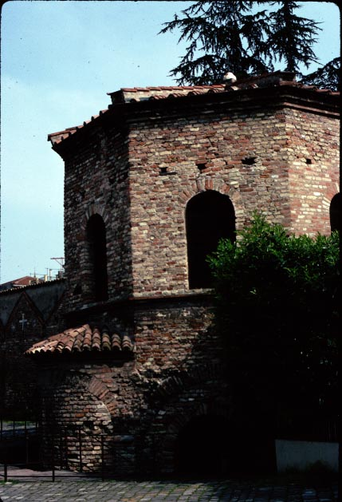
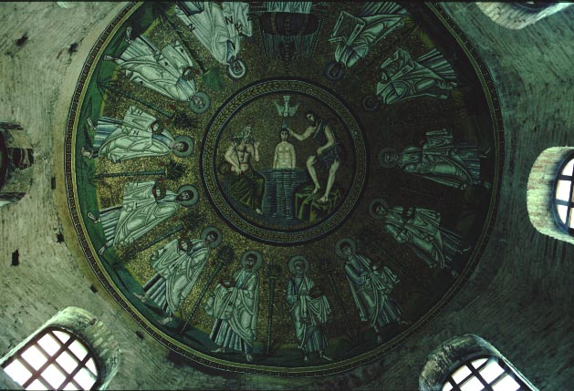
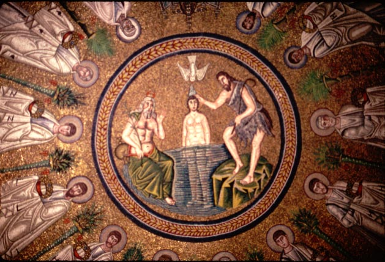

The Ostrogoths, like many Germanic tribes, believed in a form of Christianity called Arianism. Arians believed that Christ was a creation of God the father, not equal to him; this belief was condemned at the council of Nicaea in 312 (and the Nicene Creed reflects the rejection of Arian beliefs).
When the Ostrogoths conquered Italy (in 489), their king Theodoric allowed orthodox Christians (i.e. non-Arians) to practice their own religion and keep their own churches. He therefore had to build a separate cathedral and baptistry in Ravenna for the Arian church and its bishop. The Arian structures were smaller than the orthodox ones, but they copied them in many aspects, including the decoration of the dome's interior.
After the Ostrogoths were defeated and Italy was reconquered by the
empire, all of the Arian churches were given by the emperor to the
orthodox
church, and were used for orthodox worship. Sometimes the
decoration
was changed, but in the case of the Arian baptistry it was allowed to
remain as it was.

The Arian cathedral, now known as the church of the Holy Spirit.

Exterior view of the Arian Baptistry

View of the mosaics of the dome.

Detail of the mosaics of the Arian Baptistry dome. The central
circle shows the baptism of Christ
by John the Baptist (the other figure represents the River
Jordan).
Marching around
the circle are the twelve apostles.